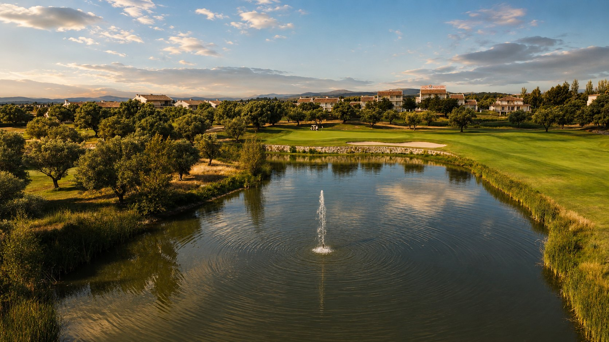
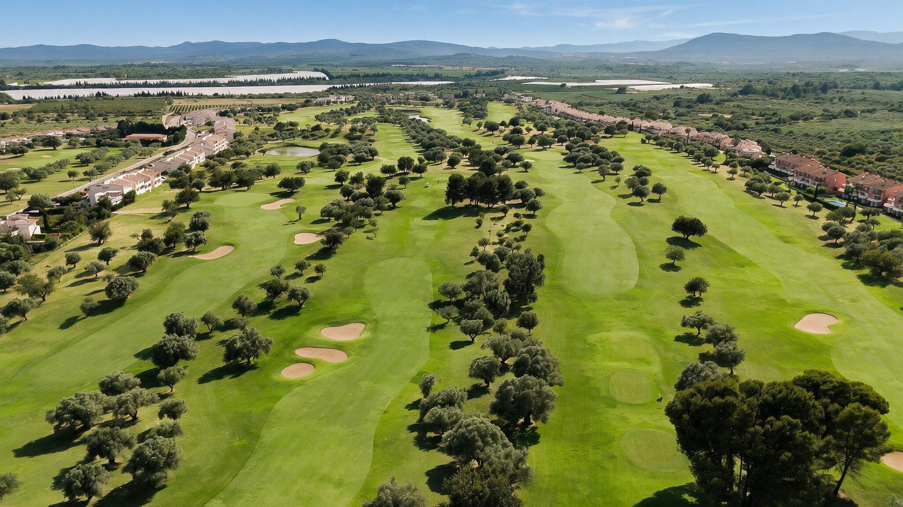

Panorámica nació en 1995 en Sant Jordi, dentro de una finca mediterránea de olivos y algarrobos, pensada desde el origen para jugadores locales e internacionales. Desde entonces se ha consolidado como uno de los grandes referentes del golf en la Comunidad Valenciana, acogiendo competiciones nacionales y pruebas de la Real Federación Española de Golf.
En 2026, Panorámica celebra su XXXI aniversario iniciando una nueva etapa: más vida social, mejores servicios, más competición y una escuela reforzada.

Panorámica es el único recorrido diseñado en España por Bernhard Langer, una de las grandes leyendas del golf europeo. Su filosofía prioriza la estrategia sobre la potencia: cada hoyo ofrece varias alternativas desde el tee, premiando la colocación y la cabeza por encima de la fuerza — con calles que respetan la orografía y el paisaje mediterráneo.

18 hoyos con lagos, olivos centenarios y amplitud de calles, pensados para jugadores de todos los niveles y abiertos todo el año.
Toca cada hoyo para ver su estrategia y el consejo del profesional.
El primer hoyo de Panorámica Golf ofrece una bienvenida amable, pero no exenta de exigencia. Desde el tee, la amplitud de la calle transmite confianza y anima a comenzar la vuelta con decisión. Sin embargo, Bernhard Langer plantea desde el primer golpe una de las características que definirán todo el recorrido: la importancia de jugar desde la posición adecuada.
Aunque la calle es generosa, el objetivo no debe ser únicamente ganar metros. Una serie de bunkers estratégicamente situados y la ligera orientación del hoyo hacen que el lado derecho de la calle ofrezca el mejor ángulo de entrada hacia el green. El jugador que priorice la colocación disfrutará de un segundo golpe mucho más cómodo.
El green está protegido por bunkers en ambos lados y presenta suaves ondulaciones que exigen precisión con los hierros. No es un green especialmente grande, por lo que conviene atacar el centro cuando la bandera se sitúa cerca de los extremos.
Un driver bien ejecutado permite afrontar un segundo golpe corto. No obstante, un hierro largo o una madera también pueden ser una excelente elección para quienes prefieran asegurar la calle.
El segundo golpe debe centrarse más en la precisión que en la agresividad. Comenzar la vuelta con un green en regulación siempre supone una ventaja psicológica.
La vuelta no se gana en el primer hoyo, pero sí puede complicarse. Jugar el centro de la calle y atacar el centro del green suele ser la estrategia más inteligente.
El segundo hoyo representa la primera oportunidad clara de birdie del recorrido. Es un par 5 largo, con una calle amplia que permite jugar con confianza desde el tee, aunque el recorrido obliga a planificar cada golpe antes de ejecutarlo.
El lago situado a la izquierda acompaña únicamente la zona inicial del hoyo, sin entrar realmente en juego para la mayoría de jugadores. El verdadero reto aparece a partir del segundo golpe, donde la estrategia comienza a marcar diferencias.
Los jugadores de mayor pegada pueden plantearse alcanzar el green en dos golpes, pero deberán valorar cuidadosamente el riesgo. Para la mayoría de golfistas, la mejor decisión consiste en dividir el hoyo en tres golpes bien ejecutados, dejando una distancia cómoda para atacar la bandera.
El green aparece ligeramente elevado y protegido por varios bunkers que penalizan cualquier aproximación imprecisa.
Un buen drive al centro permite abrir todas las opciones.
El segundo golpe debe adaptarse al nivel de cada jugador. Arriesgar solo tiene sentido si la posición desde la calle es perfecta.
Este hoyo recompensa la paciencia. Tres golpes sólidos suelen ofrecer mejores resultados que intentar un golpe extraordinario.
El hoyo más corto del recorrido no debe confundirse con el más sencillo. Este elegante par 3 exige un golpe de hierro perfectamente controlado hacia un green protegido por bunkers que obligan a afinar la dirección y la distancia.
Desde el tee la bandera parece cercana, pero cualquier error se paga caro. El bunker izquierdo recoge los golpes cortos mientras que la protección derecha dificulta enormemente salvar el par.
La amplitud del green permite diferentes posiciones de bandera, modificando completamente la estrategia según el día.
El objetivo debe ser alcanzar el centro del green.
Buscar directamente una bandera complicada rara vez compensa el riesgo.
En un par 3, el error más frecuente es escoger un palo insuficiente. Es preferible jugar un golpe controlado largo que quedarse corto en los bunkers.
Aparece el primer gran desafío de Panorámica Golf. Con más de 500 metros desde barras amarillas, este par 5 exige potencia, estrategia y mucha disciplina táctica.
La calle asciende ligeramente hacia un green muy protegido por una sucesión de bunkers que obligan a pensar el hoyo desde el tee.
La amplitud inicial invita a pegar fuerte, aunque el segundo golpe se estrecha visualmente conforme se aproxima al green.
Los jugadores largos podrán intentar llegar en dos golpes, pero el margen de error es muy reducido. La mayoría encontrará mejores resultados construyendo el hoyo con inteligencia.
Driver buscando el centro.
Segundo golpe de colocación dejando una distancia cómoda.
Tercer golpe alto para detener la bola rápidamente en un green protegido.
No es un hoyo para héroes. Es un hoyo para estrategas.
Probablemente uno de los hoyos más fotografiados de Panorámica Golf.
El agua rodea prácticamente todo el green, generando una de las imágenes más espectaculares del recorrido y, al mismo tiempo, uno de los golpes más memorables para cualquier visitante.
La distancia no resulta excesiva, pero el componente psicológico multiplica la dificultad.
El green dispone únicamente de un bunker lateral como única escapatoria.
Confíe en el palo elegido.
La duda suele ser el peor enemigo en este hoyo.
No mire el agua. Mire únicamente el objetivo.
Tras la espectacularidad del hoyo anterior, el recorrido cambia completamente de registro. El hoyo 6 es un par 4 donde la colocación desde el tee adquiere una importancia absoluta. La calle presenta una amplitud generosa en la salida, pero el diseño obliga a pensar cuidadosamente el segundo golpe.
Los bunkers situados en la zona de aterrizaje condicionan la elección del palo desde el tee, mientras que el agua situada a la derecha del green comienza a influir psicológicamente conforme el jugador avanza por la calle. El green, ligeramente elevado y protegido por una combinación de bunkers y obstáculos de agua, exige una aproximación muy precisa.
No es un hoyo para buscar el golpe perfecto, sino para construir el par mediante dos golpes bien ejecutados.
Un driver al centro de la calle proporciona una distancia cómoda para atacar el green. Sin embargo, muchos jugadores encontrarán una mejor posición utilizando una madera o un híbrido desde el tee para evitar los bunkers de calle.
El segundo golpe debe dirigirse preferentemente al centro del green. Las posiciones de bandera cercanas al agua solo deben atacarse desde una situación perfecta.
Los metros adicionales desde el tee aportan poco si comprometen el ángulo de entrada. En este hoyo, jugar desde la calle siempre será más importante que jugar desde más cerca.
El séptimo hoyo es uno de los par 3 más elegantes del recorrido. La presencia de agua en ambos laterales del green genera un efecto visual que obliga al jugador a confiar plenamente en su elección de palo.
El green aparece protegido por varios bunkers en su parte frontal y lateral, dejando únicamente una estrecha zona de acceso. No es un hoyo especialmente largo, pero sí muy técnico.
La amplitud del green permite posiciones de bandera muy diferentes entre sí, modificando considerablemente la dificultad.
El golpe debe priorizar la altura y el control de la distancia. Una bola que aterrice en el centro del green ofrecerá casi siempre una opción razonable de birdie.
Buscar una bandera escondida puede convertir un hoyo aparentemente sencillo en un doble bogey.
La decisión correcta suele ser jugar un palo más y realizar un swing controlado. La precisión nace del equilibrio, no de la fuerza.
El hoyo 8 combina longitud, amplitud y estrategia. Desde el tee, la calle parece invitar al jugador a utilizar el driver sin reservas. Sin embargo, conforme se avanza hacia el green aparecen diferentes bunkers que delimitan claramente la mejor línea de juego.
El lago situado a la derecha entra en juego únicamente para los golpes más desviados, aunque su presencia aumenta la presión en la aproximación.
El green está defendido por bunkers distribuidos estratégicamente que obligan a llegar desde la calle con un buen ángulo.
La mejor línea suele encontrarse ligeramente hacia la izquierda del centro de la calle, permitiendo abrir completamente el segundo golpe.
No conviene buscar demasiada distancia desde el tee si ello implica perder el control de la dirección.
Un bogey en este hoyo rara vez llega por un mal segundo golpe. Normalmente es consecuencia de una mala colocación desde el tee.
La primera vuelta concluye con uno de los hoyos más exigentes de Panorámica Golf. Largo, elegante y estratégicamente impecable, el hoyo 9 representa uno de los grandes desafíos del recorrido.
La calle mantiene una anchura considerable durante buena parte del hoyo, pero los bunkers y las ondulaciones naturales obligan a planificar cuidadosamente la secuencia completa de golpes.
El green aparece protegido por varios bunkers y exige una aproximación muy precisa después de un hoyo donde la longitud ya ha puesto a prueba al jugador.
Solo los grandes pegadores podrán plantearse alcanzar el green en dos golpes.
Para la mayoría, el éxito pasa por dividir el hoyo en tres golpes sólidos, dejando una distancia cómoda para el tercer tiro.
No convierta un hoyo largo en un hoyo imposible intentando un golpe heroico desde una mala posición.
El recorrido vuelve a ponerse inmediatamente a prueba con el hoyo más difícil del campo según su índice de hándicap. Un largo par 4 que exige dos golpes de enorme calidad para aspirar al par.
La calle presenta una buena anchura inicial, aunque el verdadero desafío reside en la longitud del hoyo y en un green muy bien defendido por bunkers que penalizan cualquier aproximación desviada.
Es un hoyo donde la paciencia resulta fundamental.
El objetivo prioritario consiste en encontrar la calle desde el tee.
Desde allí, el segundo golpe suele realizarse con un hierro medio o largo, por lo que alcanzar el green en regulación ya supone una excelente ejecución.
Aceptar que el par es un gran resultado ayuda a jugar este hoyo con inteligencia.
El hoyo 11 ofrece una combinación extraordinaria de longitud, agua y estrategia. El lago acompaña buena parte del lado izquierdo del recorrido, condicionando tanto el segundo como el tercer golpe.
La amplitud inicial permite jugar con confianza desde el tee, pero el hoyo se estrecha visualmente conforme el jugador se aproxima al green.
El green aparece elevado y protegido por agua y bunkers, exigiendo un golpe de aproximación muy preciso.
Un buen drive abre todas las posibilidades.
La decisión más importante llega con el segundo golpe: atacar o colocarse.
Antes de sacar el palo, pregúntese si realmente merece la pena asumir el riesgo.
Pocos hoyos reflejan tan bien la filosofía de Bernhard Langer como este espectacular par 3. El agua domina completamente la escena y obliga a ejecutar uno de los golpes más comprometidos de toda la vuelta.
El green está protegido por un gran bunker frontal y otro lateral, dejando una entrada muy definida.
La isla ajardinada situada en el lago aporta una personalidad única al hoyo y convierte cada salida en una fotografía inolvidable.
La prioridad absoluta debe ser alcanzar el green.
Buscar una bandera complicada rara vez compensa el riesgo.
Respire, elija el palo con convicción y realice un swing natural. En este hoyo, la confianza vale tanto como la técnica.
El hoyo 13 puede parecer uno de los más asequibles del recorrido por su longitud, pero Bernhard Langer vuelve a demostrar que la dificultad no siempre depende de los metros. Se trata de un par 4 corto en el que la estrategia y la precisión tienen mucho más peso que la potencia.
Desde el tee, la calle ofrece una buena zona de aterrizaje, aunque los bunkers situados en ambos lados condicionan la mejor línea de juego. El verdadero reto aparece en el segundo golpe, donde un gran lago protege completamente el lado derecho del green y obliga a controlar perfectamente la distancia.
El green, ligeramente elevado y protegido además por dos bunkers posteriores, exige una aproximación muy precisa. Un golpe demasiado agresivo puede terminar fácilmente en el agua o en la arena.
No es necesario utilizar siempre el driver. Una salida controlada que deje entre 90 y 120 metros ofrece una excelente oportunidad para atacar la bandera.
Este es uno de esos hoyos donde el birdie llega por inteligencia, no por potencia. Construya el hoyo desde la calle y no desde el tee.
El hoyo 14 mantiene la esencia estratégica del recorrido. La calle se presenta relativamente amplia, pero una sucesión de bunkers obliga a seleccionar cuidadosamente la zona de aterrizaje.
La entrada al green se estrecha considerablemente y premia al jugador que haya conseguido colocarse correctamente desde el tee. El green está protegido por bunkers laterales que dificultan cualquier recuperación.
Es un hoyo donde cada golpe influye directamente en el siguiente.
Busque el centro de la calle y deje un hierro corto hacia el green.
No merece la pena acercarse demasiado a los bunkers buscando unos metros adicionales.
La mejor defensa de este hoyo no está en los bunkers, sino en obligar al jugador a pensar cada golpe.
El hoyo 15 marca el inicio del tramo decisivo del recorrido. Es un largo par 4 que exige un excelente golpe desde el tee para poder afrontar con garantías una segunda aproximación de media o larga distancia.
La calle es relativamente estrecha y está enmarcada por árboles y vegetación que penalizan cualquier desviación importante. El green, protegido por bunkers en ambos lados, obliga a llegar desde una posición favorable.
En competición suele ser uno de los hoyos donde más diferencias aparecen en la clasificación.
Priorice siempre la calle.
Un segundo golpe desde el rough convierte inmediatamente el par en un resultado muy complicado.
En este hoyo la paciencia vuelve a ser una virtud. No intente recuperar un mal golpe con otro aún más arriesgado.
El penúltimo par 3 del recorrido combina una distancia exigente con un green muy bien protegido por bunkers laterales.
Aunque visualmente transmite tranquilidad, el green presenta diferentes plataformas y pendientes que complican enormemente el putt si la bola no termina en la zona correcta.
El viento suele hacerse notar en esta parte del recorrido, añadiendo un factor estratégico adicional.
La mejor opción vuelve a ser el centro del green.
Las posiciones de bandera cercanas a los bunkers solo deben atacarse desde una confianza absoluta.
No permita que la proximidad del final de la vuelta altere su rutina. Trátelo como cualquier otro golpe.
El hoyo 17 es uno de los más atractivos visualmente de Panorámica Golf. Dos lagos acompañan el recorrido y condicionan especialmente el golpe de aproximación.
La calle ofrece espacio suficiente desde el tee, pero el segundo golpe exige una enorme precisión hacia un green situado muy cerca del agua.
Las posiciones de bandera en el lado derecho generan uno de los golpes más espectaculares de toda la vuelta.
Una salida al centro de la calle permite afrontar el green con confianza.
No conviene atacar una bandera complicada si el resultado está en juego.
En el hoyo 17 los torneos no suelen ganarse, pero sí pueden perderse.
Todo gran recorrido merece un final memorable, y Panorámica Golf lo consigue con un espectacular par 5 que conduce al jugador de regreso a la Casa Club.
Desde el tee, la amplitud de la calle invita a jugar con decisión, pero la verdadera dificultad reside en la planificación de los siguientes golpes. La sucesión de bunkers, las ligeras ondulaciones del terreno y la excelente protección del green obligan a mantener la concentración hasta el último putt.
Los jugadores más largos podrán plantearse alcanzar el green en dos golpes, aunque el margen de error disminuye considerablemente conforme se aproxima el final del hoyo. Para la mayoría, la estrategia más inteligente consistirá en construir el hoyo con tres golpes bien ejecutados.
La llegada al green, con la Casa Club como telón de fondo, ofrece uno de los finales más elegantes del recorrido y deja al jugador con la sensación de haber completado una vuelta diseñada para disfrutar del golf en su máxima expresión.
Un buen drive abre todas las opciones, pero el segundo golpe debe decidirse en función de la posición de la bola y no del deseo de llegar al green.
Si existe alguna duda, la colocación será siempre la mejor alternativa.
El hoyo 18 resume la filosofía de Bernhard Langer: inteligencia, precisión y disciplina estratégica. Mantenga la calma hasta el último golpe; muchas vueltas se deciden aquí.

Una de las mayores áreas de práctica de Europa: todo lo necesario para entrenar cada faceta del juego, durante todo el año gracias al clima de la Costa del Azahar. Aquí no solo se viene a jugar — se viene a entrenar, aprender y mejorar.
Diseñada para reproducir situaciones reales de juego, elegida por academias, escuelas y equipos nacionales e internacionales para sus concentraciones.

Amplia superficie de golpeo con objetivos a distintas distancias, para entrenamientos individuales y colectivos.

Una gran superficie de putting, con pendientes y velocidades variadas, para preparar el recorrido antes de salir a jugar.

Chips, pitch, bunker y aproximaciones desde cualquier posición — la parte del juego que más diferencia marca en la tarjeta.

Un recorrido propio de pares 3 para trasladar el entrenamiento al campo — ideal para iniciación y para la Escuela de Golf.